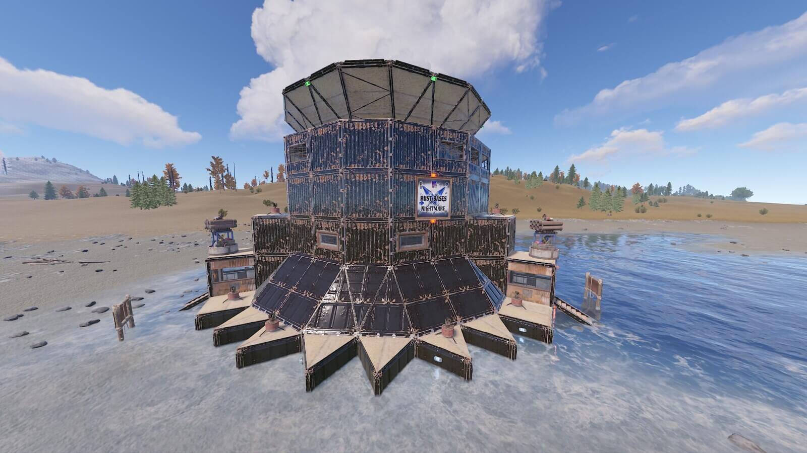

¿Qué son las bases?
Las bases, perfectamente, pueden ser una de las cosas más importantes y vitales que hay en el juego ya que nos permiten poder almacenar nuestro inventario, y si tienes ciertos conocimientos, como los artífices de este juego que veremos luego, puedes llegar a montar una base tan perfecta como impenetrable
Diferentes tipos de bases
Primero vamos a hablar de todos los tipos de bases que existen, ya que hay diferentes tipos.SOLO
Estas bases son las más simples y fáciles de hacer, ya que requieren de pocos materiales y tiempo. Son ideales para jugadores que juegan solos o que no tienen mucho tiempo para dedicarle al juego.
DÚOS
Estas bases son un poco más complejas y requieren de más materiales y tiempo para hacerlas. Son ideales para jugadores que juegan en pareja o en pequeños grupos, ya que permiten almacenar más objetos y tener más espacio para moverse dentro de la base.
ESCUADRÓN
Estas bases son las más complejas y difíciles de hacer, ya que requieren de mucho tiempo y materiales. Pero a la vez son las más resistentes y seguras, ya que al ser hechas por varias personas se pueden permitir el lujo de hacerlas más grandes y con más espacio para almacenar objetos.